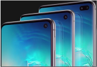
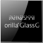
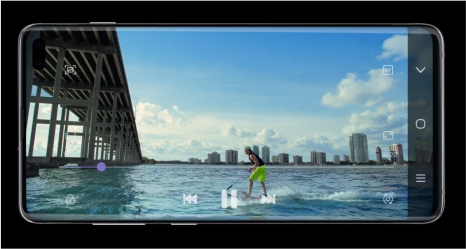

Еще больше возможностей
Новый дизайн
- 
Абсолютно новый Infinity-O экран — на передней стороне смартфона нет ничего, кроме огромного экрана и фронтальной камеры.
 Для любителей роскоши, модель S10+ будет выпускаться в керамическом корпусе черного и белого цветов.
Для любителей роскоши, модель S10+ будет выпускаться в керамическом корпусе черного и белого цветов.-
Смартфоны доступны в 4х стильных цветах: Перламутр, Аквамарин, Оникс и Цитрус (для S10e).
- 
В моделях S10 и S10+ установлены защитные стекла нового поколения – Gorilla Glass 6.
Сканер отпечатка в экране
Съемка видео

 Отличное качество съемки новых поколениесмартфонов Samsung позволит создать и смотреть праздники, семейные торжества и памятные моменты на огромном экране, с яркими, живыми цветами и прекрасной детализацией.
Отличное качество съемки новых поколениесмартфонов Samsung позволит создать и смотреть праздники, семейные торжества и памятные моменты на огромном экране, с яркими, живыми цветами и прекрасной детализацией.-
Дополнительная система стабилизации сделает видеоролики плавными и красивыми.
-
Сверхзамедленная съемка (960 кадров в секунду) теперь в 2 раза дольше. Камера в S10 способна распознать самое стремительное движение, такое как языки пламени, брызги воды, дым из под колес спорткара.